Seniors weren't struggling with usability. They were struggling with trust.
51–70 year olds don't stop using Google Maps because it's complicated. They stop using it because they don't trust it. This project explores how landmark-based navigation, reassurance, and explainable system behaviour could make navigation feel safer, more predictable, and more human.
Most accessibility redesigns start with bigger buttons. This one started with trust.
When I began this project, I assumed senior citizens struggled with Google Maps because the interface was visually overwhelming.
The research pointed somewhere else entirely.
Participants could search for destinations. They could start navigation. They understood the basics. The friction appeared after navigation began. The real problem wasn't operating Google Maps. It was trusting it.
Not all seniors behave the same way. For this redesign I focused specifically on adults aged 51–70.
Unlike older age groups, they still attempt to navigate independently, own smartphones, and regularly travel to important destinations — hospitals, temples, markets, family events.
They have motivation. They have access. But they experience significantly more friction than younger users.
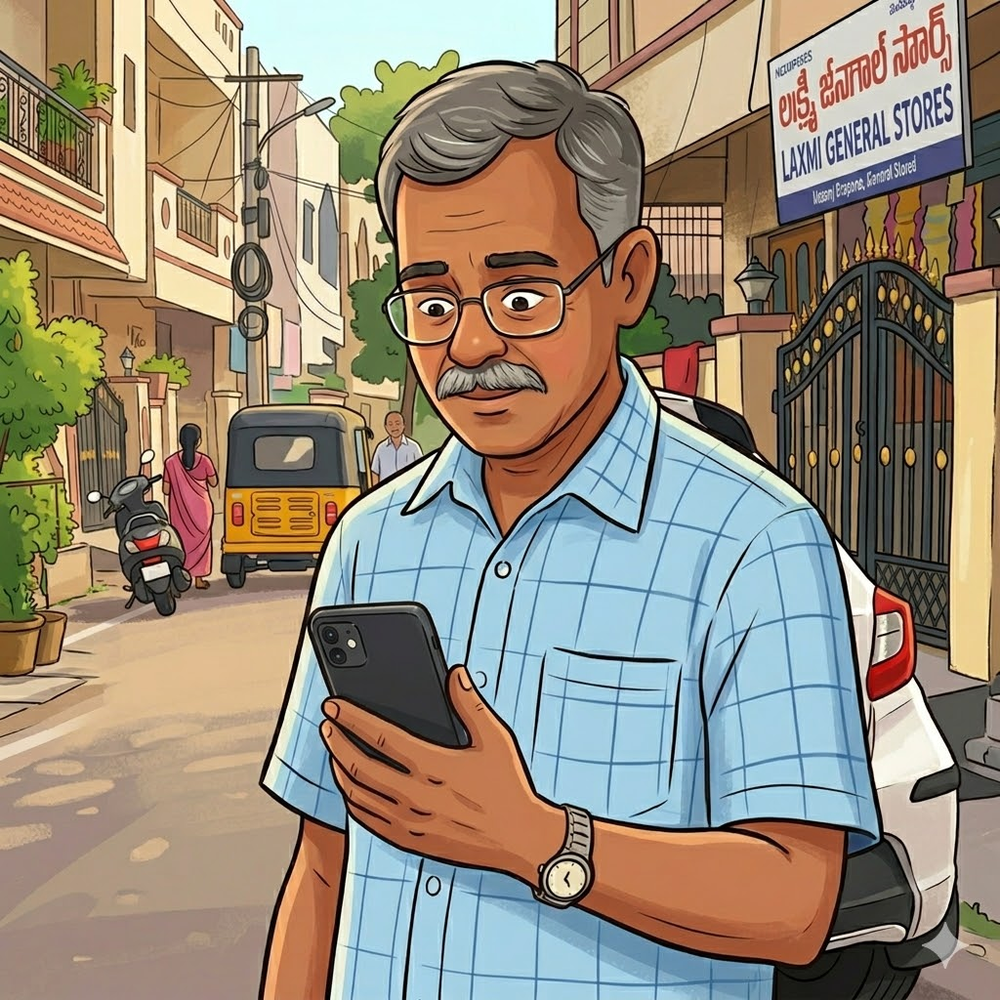
The goal wasn't to generate statistically significant findings. The goal was to identify patterns strong enough to prioritise against.
I conducted 5 semi-structured interviews, 1 contextual observation session, with participants aged 56–69, plus supplementary research across online communities discussing navigation challenges faced by older adults.
Interviews focused on how people currently navigate, where confidence breaks down, and how trust is built or lost during a journey.
Individual experiences varied, but the same four patterns appeared across every interview.
All four findings pointed toward the same pattern. At first glance these seem like separate issues. They're not. They are different manifestations of the same underlying problem.
Senior citizens don't abandon Google Maps because it gives incorrect directions. They abandon it because it doesn't make them feel informed, reassured, or in control.
This insight changed the entire direction of the project. Instead of asking how to simplify Google Maps, the question became: how do we increase trust during navigation?
The demo covers onboarding — establishing trust before navigation begins — and the core navigation experience, built around the four design principles.
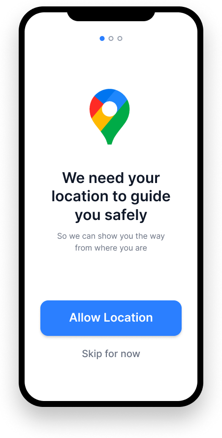
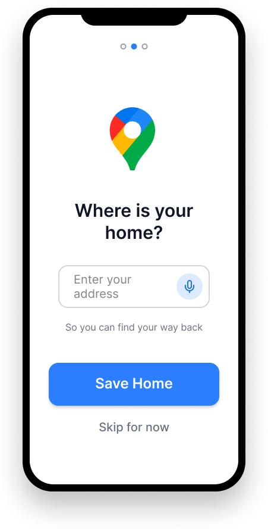
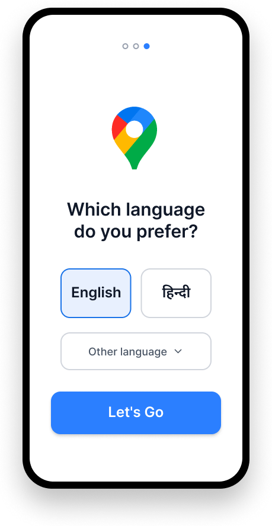
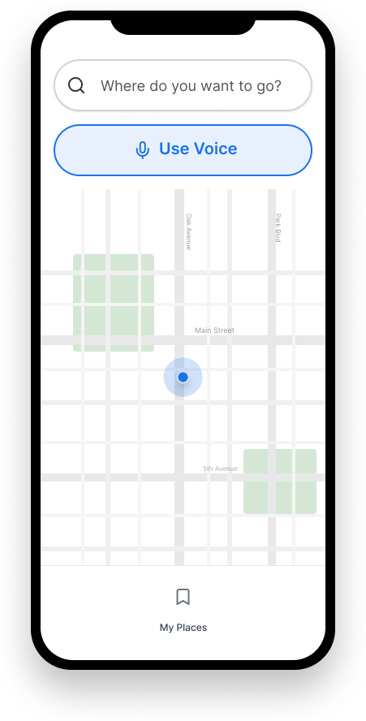
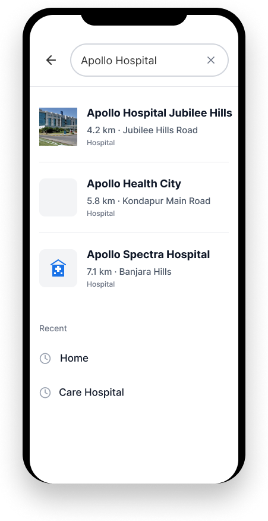
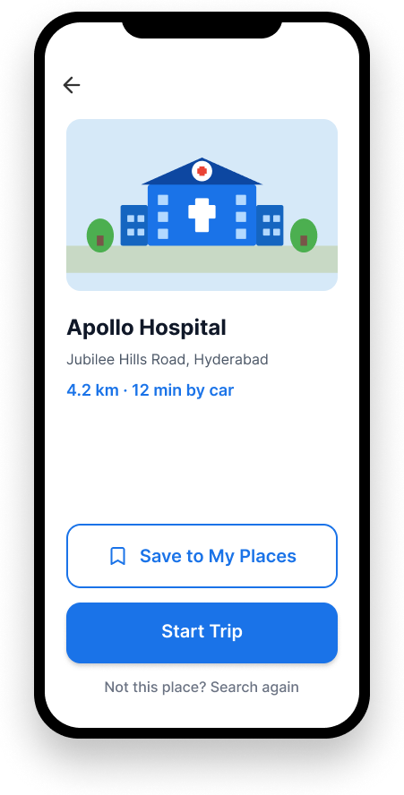
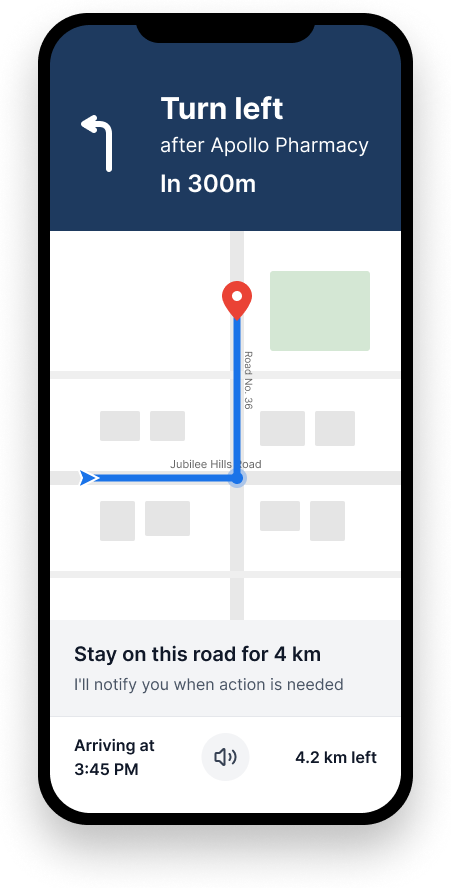
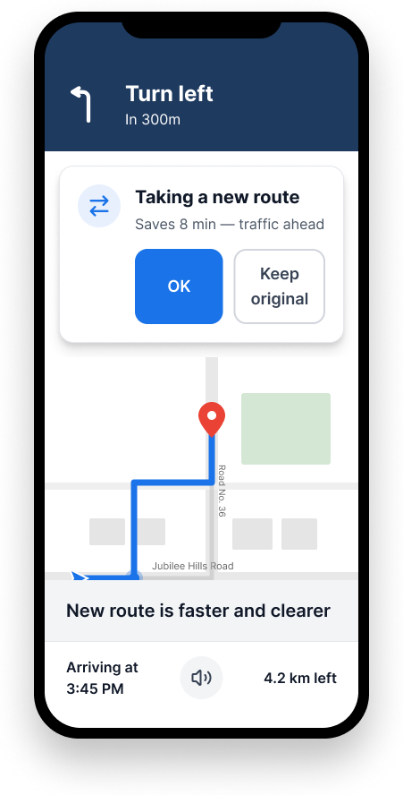
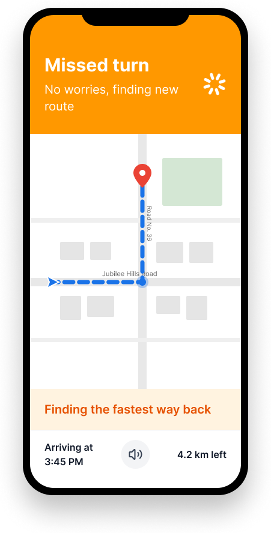
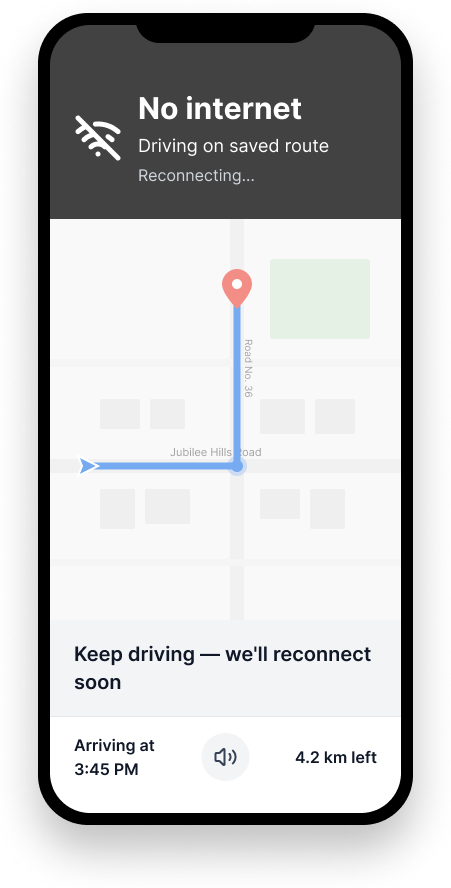
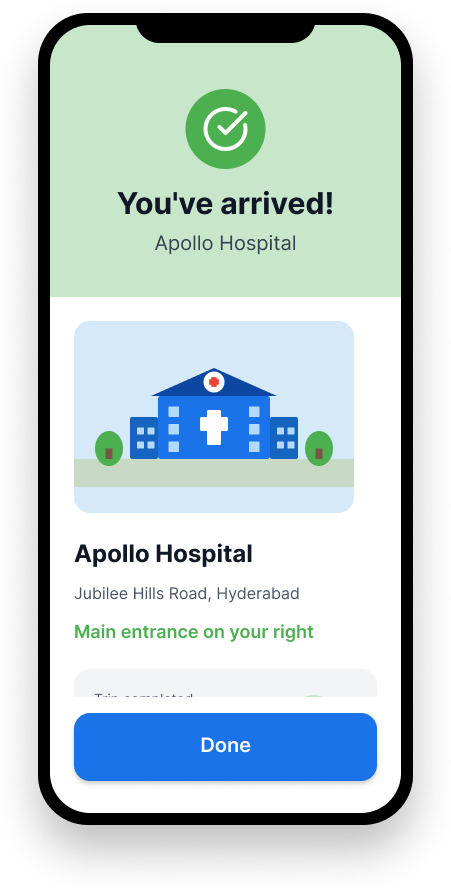